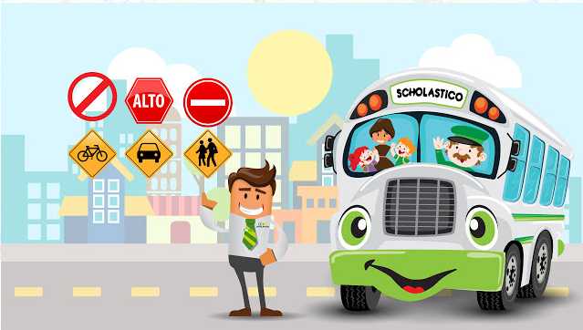

Debido a la situación que está pasando a nivel mundial este cronograma puede tener modificaciones respecto a las fechas.
• ALTERNATIVA DE SOLUCION
DESARROLLO DE LA SOLUCION
Se planteó la solución de dar una conferencia informativa con todo lo necesario
para que el problema no persista. Se llevará acabo con una plataforma virtual, en
este caso por Google Meet. Recolectando toda la información pertinente al caso
para cuando regresemos a la normalidad este problema ya se haya tocado y
aprendido al respeto.
PLAN DE ACCION
Será una exposición/conferencia didáctica con la cual se espera facilitar la
información requerida para la solución de nuestro mayor problema de movilidad en
la ENSB.
FECHA
Transcurso del tercer periodo
• ANEXOS
Ir al anexo 1
Ir al anexo 2
• BIBLIOGRAFIAS
Fuente 1
Fuente 2
